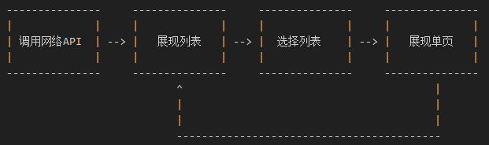
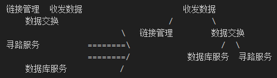
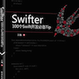

.jpg)
iOS应用架构谈（一）：架构设计的方法论
摘要：iOS客户端应用架构看似简单，但实际上要考虑的事情不少。本文作者将以系列文章的形式来回答iOS应用架构中的种种问题，本文是其中的第一篇，主要讲架构设计的通识和方法论等，同时还讨论了大家关心的架构分层、是否要有common文件夹等问题。
缘由
之前安居客iOS app的第二版架构大部分内容是我做的，期间有总结了一些经验。在将近一年之后，前同事zzz在微信朋友圈上发了一个问题：假如问你一个iOS or Android app的架构，你会从哪些方面来说呢？
当时看到这个问题正好在乘公车回家的路上，闲来无聊就答了一把。在zzz在微信朋友圈上追问了几个问题之后，我觉得有必要以文章形式专门来讲一些个人见解。
其实对于iOS客户端应用的架构来说，复杂度不亚于服务端，但侧重点和入手点却跟服务端不太一样。比如客户端应用就不需要考虑类似C10K的问题，正常的app就根本不需要考虑。
这系列文章我会主要专注在iOS应用架构方面，很多方案也是基于iOS技术栈的特点而建立的。因为我个人不是很喜欢写Java，所以Android这边的我就不太了解了。如果你是Android开发者，你可以侧重看我提出的一些架构思想，毕竟不管做什么，思路是相通的，实现手段不同罢了。
当我们讨论客户端应用架构的时候，我们在讨论什么？
其实市面上大部分应用不外乎就是颠过来倒过去地做以下这些事情：

简单来说就是调API，展示页面，然后跳转到别的地方再调API，再展示页面。
那这有什么好架构的？
非也，非也。 ---- 包不同 《天龙八部》
App确实就是主要做这些事情，但是支撑这些事情的基础，就是做架构要考虑的事情：
- 调用网络API。如何让业务开发工程师方便安全地调用网络API？然后尽可能保证用户在各种网络环境下都能有良好的体验？
- 页面展示。页面如何组织，才能尽可能降低业务方代码的耦合度？尽可能降低业务方开发界面的复杂度，提高他们的效率？
- 数据的本地持久化。当数据有在本地存取的需求的时候，如何能够保证数据在本地的合理安排？如何尽可能地减小性能消耗？
- 动态部署方案。iOS应用有审核周期，如何能够通过不发版本的方式展示新的内容给用户？如何修复紧急bug？
上面几点是针对App说的，下面还有一些是针对团队说的：
- 收集用户数据，给产品和运营提供参考
- 合理地组织各业务方开发的业务模块，以及相关基础模块
- 每日app的自动打包，提供给QA工程师的测试工具
一时半会儿我还是只能想到上面这三点，事实上应该还会有很多，这里就不一一列举了。
所以当我们讨论客户端应用架构的时候，我们讨论的差不多就是这些问题。
这系列文章要回答哪些问题？
这系列文章主要是回答以下这些问题：
- 网络层设计方案？设计网络层时要考虑哪些问题？对网络层做优化的时候，可以从哪些地方入手？
- 页面的展示、调用和组织都有哪些设计方案？我们做这些方案的时候都要考虑哪些问题？
- 本地持久化层的设计方案都有哪些？优劣势都是什么？不同方案间要注意的问题分别都是什么？
- 要实现动态部署，都有哪些方案？不同方案之间的优劣点，他们的侧重点？
本文要回答那些问题？
上面细分出来的四个问题，我会分别在四篇文章里面写。那么这篇文章就是来讲一些通识啥的，也是开个坑给大家讨论通识问题的。
架构设计的方法
所有事情最难的时候都是开始做的时候，当你开始着手设计并实现某一层的架构乃至整个app的架构的时候，很有可能会出现暂时的无从下手的情况。以下方法论是我这些年总结出来的经验，每个架构师也一定都有一套自己的方法论，但一样的是，不管你采用什么方法，全局观、高度的代码审美能力、灵活使用各种设计模式一定都是贯穿其中的。欢迎各位在评论区讨论。
第一步：搞清楚要解决哪些问题，并找到解决这些问题的充要条件
你必须得清楚你要做什么，业务方希望要什么。而不是为了架构而架构，也不是为了体验新技术而改架构方案。以前是MVC，最近流行MVVM，如果过去的MVC是个好架构，没什么特别大的缺陷，就不要推倒然后搞成MVVM。
关于充要条件我也要说明一下，有的时候系统提供的函数是需要额外参数的，比如read函数。还有翻页的时候，当前页码也是充要条件。但对于业务方来说，这些充要条件还能够再缩减。
比如read，需要给出file descriptor，需要给出buf，需要给出size。但是对于业务方来说，充要条件就只要file descriptor就够了。再比如翻页，其实业务方并不需要记录当前页号，你给他暴露一个loadNextPage这样的方法就够了。
搞清楚对于业务方而言的真正充要条件很重要！这决定了你的架构是否足够易用。另外，传的参数越少，耦合度相对而言就越小，你替换模块或者升级模块所花的的代价就越小。
第二步：问题分类，分模块
这个不用多说了吧。
第三步：搞清楚各问题之间的依赖关系，建立好模块交流规范并设计模块
关键在于建立一套统一的交流规范。这一步很能够体现架构师在软件方面的价值观，虽然存在一定程度上的好坏优劣（比如胖Model和瘦Model），但既然都是架构师了，基本上是不会设计出明显很烂的方案的，除非这架构师还不够格。所以这里是架构师价值观输出的一个窗口，从这一点我们是能够看出架构师的素质的。
另外要注意的是，一定是建立一套统一的交流规范，不是两套，不是多套。你要坚持你的价值观，不要摇摆不定。要是搞出各种五花八门的规范出来，一方面有不切实际的炫技嫌疑，另一方面也会带来后续维护的灾难。
第四步：推演预测一下未来可能的走向，必要时添加新的模块，记录更多的基础数据以备未来之需
很多称职的架构师都会在这时候考虑架构未来的走向，以及考虑做完这一轮架构之后，接下来要做的事情。一个好的架构虽然是功在当代利在千秋的工程，但绝对不是一个一劳永逸的工程。软件是有生命的，你做出来的架构决定了这个软件它这一生是坎坷还是幸福。
第五步：先解决依赖关系中最基础的问题，实现基础模块，然后再用基础模块堆叠出整个架构
这一步也是验证你之前的设计是否合理的一步，随着这一步的推进，你很有可能会遇到需要对架构进行调整的情况。这个阶段一定要吹毛求疵高度负责地去开发，不要得过且过，发现架构有问题就及时调整。否则以后调整的成本就非常之大了。
第六步：打点，跑单元测试，跑性能测试，根据数据去优化对应的地方
你得用这些数据去向你的boss邀功，你也得用这些数据去不断调整你的架构。
总而言之就是要遵循这些原则：自顶向下设计（1，2，3，4步），自底向下实现（5），先测量，后优化（6）。
什么样的架构师是好架构师？
- 每天都在学习，新技术新思想上手速度快，理解速度快
做不到这点，你就是码农 - 业务出身，或者至少非常熟悉公司所处行业或者本公司的业务
做不到这点，你就是运维 - 熟悉软件工程的各种规范，踩过无数坑。不会为了完成需求不择手段，不推崇quick & dirty
做不到这点，你比较适合去竞争对手那儿当工程师 - 及时承认错误，不要觉得承认错误会有损你架构师的身份
做不到这点，公关行业比较适合你 - 不为了炫技而炫技
做不到这点，你就是高中编程爱好者 - 精益求精
做不到这点，（我想了好久，但我还是不知道你适合去干什么。）
什么样的架构叫好架构？
- 代码整齐，分类明确，没有common，没有core
- 不用文档，或很少文档，就能让业务方上手
- 思路和方法要统一，尽量不要多元
- 没有横向依赖，万不得已不出现跨层访问
- 对业务方该限制的地方有限制，该灵活的地方要给业务方创造灵活实现的条件
- 易测试，易拓展
- 保持一定量的超前性
- 接口少，接口参数少
- 高性能
以上是我判断一个架构是不是好架构的标准，这是根据重要性来排列的。客户端架构跟服务端架构要考虑的问题和侧重点是有一些区别的。下面我会针对每一点详细讲解一下：
代码整齐，分类明确，没有common，没有core
代码整齐是每一个工程师的基本素质，先不说你搞定这个问题的方案有多好，解决速度有多快，如果代码不整齐，一切都白搭。因为你的代码是要给别人看的，你自己也要看。如果哪一天架构有修改，正好改到这个地方，你很容易自己都看不懂。另外，破窗理论提醒我们，如果代码不整齐分类不明确，整个架构会随着一次一次的拓展而越来越混乱。
分类明确的字面意思大家一定都了解，但还有一个另外的意思，那就是：不要让一个类或者一个模块做两种不同的事情。如果有类或某模块做了两种不同的事情，一方面不适合未来拓展，另一方面也会造成分类困难。
不要搞Common，Core这些东西。每家公司的架构代码库里面，最恶心的一定是这两个名字命名的文件夹，我这么说一定不会错。不要开Common，Core这样的文件夹，开了之后后来者一定会把这个地方搞得一团糟，最终变成Common也不Common，Core也不Core。要记住，架构是不断成长的，是会不断变化的。不是每次成长每次变化，都是由你去实现的。如果真有什么东西特别小，那就索性为了他单独开辟一个模块就好了，小就小点，关键是要有序。
关于这一条，后面还会详细论述。
不用文档，或很少文档，就能让业务方上手
谁特么会去看文档啊，业务方他们已经被产品经理逼得很忙了。所以你要尽可能让你的API名字可读性强，对于iOS来说，objc这门语言的特性把这个做到了极致，函数名长就长一点，不要紧。
好的函数名：
- (NSDictionary *)exifDataOfImage:(UIImage *)image atIndexPath:(NSIndexPath *)indexPath;
坏的函数名：
- (id)exifData:(UIImage *)image position:(id)indexPath callback:(id<ErrorDelegate>)delegate;
为什么坏？
- 不要直接返回id或者传入id，实在不行，用id也比id好。如果连这个都做不到，你要好好考虑你的架构是不是有问题。
- 要告知业务方要传的东西是什么，比如要传Image，那就写上ofImage。如果要传位置，那就要写上IndexPath，而不是用position这么笼统的东西
- 没有任何理由要把delegate作为参数传进去，一定不会有任何情况不得不这么做的。而且delegate这个参数根本不是这个函数要解决的问题的充要条件，如果你发现你不得不这么做，那一定是架构有问题！
思路和方法要统一，尽量不要多元
解决一个问题会有很多种方案，但是一旦确定了一种方案，就不要在另一个地方采用别的方案了。也就是做架构的时候，你得时刻记住当初你决定要处理这样类型的问题的方案是什么，以及你的初衷是什么，不要摇摆不定。
另外，你当初设立这个模块一定是有想法有原因的，要记录下你的解决思路，不要到时候换个地方你又灵光一现啥的，引入了其他方案，从而导致异构。
要是一个框架里面解决同一种类似的问题有各种五花八门的方法或者类，我觉得做这个架构的架构师一定是自己都没想清楚就开始搞了。
没有横向依赖，万不得已不出现跨层访问
没有横向依赖是很重要的，这决定了你将来要对这个架构做修补所需要的成本有多大。要做到没有横向依赖，这是很考验架构师的模块分类能力和是否熟悉业务的。
跨层访问是指数据流向了跟自己没有对接关系的模块。有的时候跨层访问是不可避免的，比如网络底层里面信号从2G变成了3G变成了4G，这是有可能需要跨层通知到View的。但这种情况不多，一旦出现就要想尽一切办法在本层搞定或者交给上层或者下层搞定，尽量不要出现跨层的情况。跨层访问同样也会增加耦合度，当某一层需要整体替换的时候，牵涉面就会很大。
对业务方该限制的地方有限制，该灵活的地方要给业务方创造灵活实现的条件
把这点做好，很依赖于架构师的经验。架构师必须要有能力区分哪些情况需要限制灵活性，哪些情况需要创造灵活性。比如对于Core Data技术栈来说，ManagedObject理论上是可以出现在任何地方的，那就意味着任何地方都可以修改ManagedObject，这就导致ManagedObjectContext在同步修改的时候把各种不同来源的修改同步进去。这时候就需要限制灵活性，只对外公开一个修改接口，不暴露任何ManagedObject在外面。
如果是设计一个ABTest相关的API的时候，我们又希望增加它的灵活性。使得业务方不光可以通过Target-Action的模式实现ABtest，也要可以通过Block的方式实现ABTest，要尽可能满足灵活性，减少业务方的使用成本。
易测试易拓展
老生常谈，要实现易测试易拓展，那就要提高模块化程度，尽可能减少依赖关系，便于mock。另外，如果是高度模块化的架构，拓展起来将会是一件非常容易的事情。
保持一定量的超前性
这一点能看出架构师是否关注行业动态，是否能准确把握技术走向。保持适度的技术上的超前性，能够使得你的架构更新变得相对轻松。
另外，这里的超前性也不光是技术上的，还有产品上的。谁说架构师就不需要跟产品经理打交道了，没事多跟产品经理聊聊天，听听他对产品未来走向的畅想，你就可以在合理的地方为他的畅想留一条路子。同时，在创业公司的环境下，很多产品需求其实只是为了赶产品进度而产生的妥协方案，最后还是会转到正轨的。这时候业务方可以不实现转到正规的方案，但是架构这边，是一定要为这种可预知的改变做准备的。
接口少，接口参数少
越少的接口越少的参数，就能越降低业务方的使用成本。当然，充要条件还是要满足的，如何在满足充要条件的情况下尽可能地减少接口和参数数量，这就能看出架构师的功力有多深厚了。
高性能
为什么高性能排在最后一位？
高性能非常重要，但是在客户端架构中，它不是第一考虑因素。原因有下：
- 客户端业务变化非常之快，做架构时首要考虑因素应当是便于业务方快速满足产品需求，因此需要尽可能提供简单易用效果好的接口给业务方，而不是提供高性能的接口给业务方。
- 苹果平台的性能非常之棒，正常情况下很少会出现由于性能不够导致的用户体验问题。
- 苹果平台的优化手段相对有限，甚至于有些时候即便动用了无所不用其极的手段乃至不择手段牺牲了稳定性，性能提高很有可能也只不过是100ms到90ms的差距。10%的性能提升对于服务端来说很不错了，因为服务端动不动就是几十万上百万的访问量，几十万上百万个10ms是很可观的。但是对于客户端的用户来说，他无法感知这10ms的差别，如果从10s优化成9s用户还是有一定感知的，但是100ms变90ms，我觉得吧，还是别折腾了。
但是！不重要不代表用不着去做，关于性能优化的东西，我会对应放到各系列文章里面去。比如网络层优化，那就会在网络层方案的那篇文章里面去写，对应每层架构都有每层架构的不同优化方案，我都会在各自文章里面一一细说。
关于架构分层？
昨晚上朋友看了这篇文章之后说，看到你这个题目本来我是期望看到关于架构分层相关的东西的，但是你没写。
嗯，确实没写，当时没写的原因是感觉这个没什么好写的。前面谈论到架构的方法的时候，关于问题分类分模块这一步时，架构分层也属于这一部分，给我一笔带过了。
既然朋友提出来了这个问题，我想可能大家关于这个也会有一些想法和问题，那么我就在这儿讲讲吧。
其实分层这种东西，真没啥技术含量，全凭架构师的经验和素质。
我们常见的分层架构，有三层架构的：展现层、业务层、数据层。也有四层架构的：展现层、业务层、网络层、本地数据层。这里说三层、四层，跟TCP/IP所谓的五层或者七层不是同一种概念。再具体说就是：你这个架构在逻辑上是几层那就几层，具体每一层叫什么，做什么，没有特定的规范。这主要是针对模块分类而言的。
也有说MVC架构，MVVM架构的，这种层次划分，主要是针对数据流动的方向而言的。
在实际情况中，针对数据流动方向做的设计和针对模块分类做的设计是会放在一起的，也就是说，一个MVC架构可以是四层：展现层、业务层、网络层、本地数据层。
那么，为什么我要说这个？
大概在五六年前，业界很流行三层架构这个术语。然后各种文档资料漫天的三层架构，并且喜欢把它与MVC放在一起说，MVC三层架构/三层架构MVC，以至于很多人就会认为三层架构就是MVC，MVC就是三层架构。其实不是的。三层架构里面其实没有Controller的概念，而且三层架构描述的侧重点是模块之间的逻辑关系。MVC有Controller的概念，它描述的侧重点在于数据流动方向。
好，为什么流行起来的是三层架构，而不是四层架构或五层架构？
因为所有的模块角色只会有三种：数据管理者、数据加工者、数据展示者，意思也就是，笼统说来，软件只会有三层，每一层扮演一个角色。其他的第四层第五层，一般都是这三层里面的其中之一分出来的，最后都能归纳进这三层的某一层中去，所以用三层架构来描述就比较普遍。
那么我们怎么做分层？
应该如何做分层，不是在做架构的时候一开始就考虑的问题。虽然我们要按照自顶向下的设计方式来设计架构，但是一般情况下不适合直接从三层开始。一般都是先确定所有要解决的问题，先确定都有哪些模块，然后再基于这些模块再往下细化设计。然后再把这些列出来的问题和模块做好分类。分类之后不出意外大多数都是三层。如果发现某一层特别庞大，那就可以再拆开来变成四层，变成五层。
举个例子：你要设计一个即时通讯的服务端架构，怎么分层？
记住，不要一上来就把三层架构的规范套上去，这样做是做不出好架构的。
你要先确定都需要解决哪些问题。这里只是举例子，我随意列出一点意思意思就好了：
- 要解决用户登录、退出的问题
- 解决不同用户间数据交流的问题
- 解决用户数据存储的问题
- 如果是多台服务器的集群，就要解决用户连接的寻址问题
解决第一个问题需要一个链接管理模块，链接管理模块一般是通过链接池来实现。 解决第二个问题需要有一个数据交换模块，从A接收来的数据要给到B，这个事情由这个模块来做。 解决第三个问题需要有个数据库，如果是服务于大量用户，那么就需要一个缓冲区，只有当需要存储的数据达到一定量时才执行写操作。 解决第四个问题可以有几种解决方案，一个是集群中有那么几台服务器作为寻路服务器，所有寻路的服务交给那几台去做，那么你需要开发一个寻路服务的Daemon。或者用广播方式寻路，但如果寻路频次非常高，会造成集群内部网络负载特别大。这是你要权衡的地方，目前流行的思路是去中心化，那么要解决网络负载的问题，你就可以考虑配置一个缓存。
于是我们有了这些模块：
链接管理、数据交换、数据库及其配套模块、寻路模块
做到这里还远远没有结束，你要继续针对这四个模块继续往下细分，直到足够小为止。但是这里只是举例子，所以就不往下深究了。
另外，我要提醒你的是，直到这时，还是跟几层架构毫无关系的。当你把所有模块都找出来之后，就要开始整理你的这些模块，很有可能架构图就是这样：

然后这些模块分完之后你看一下图，嗯，1、2、3，一共三层，所以那就是三层架构啦。在这里最消耗脑力最考验架构师功力的地方就在于：找到所有需要的模块, 把模块放在该放的地方
这个例子侧重点在于如何分层，性能优化、数据交互规范和包协议、数据采集等其他一系列必要的东西都没有放进去，但看到这里，相信你应该了解架构师是怎么对待分层问题的了吧？
对的，答案就是没有分层。所谓的分层都是出架构图之后的事情了。所以你看别的架构师在演讲的时候，上来第一句话差不多都是："这个架构分为以下几层..."。但考虑分层的问题的时机绝对不是一开始就考虑的。另外，模块一定要把它设计得独立性强，这其实是门艺术活。
另外，这虽然是服务端架构，但是思路跟客户端架构是一样的，侧重点不同罢了。之所以不拿客户端架构举例子，是因为这方面的客户端架构苹果已经帮你做好了绝大部分事情，没剩下什么值得说的了。
关于Common文件夹？
在原文的评论区MatrixHero提到一点：
关于common文件夹的问题，仅仅是文件夹而已，别无他意。如果后期维护出了代码混乱可能是因为，和服务器沟通协议不统一，或代码review不及时。应该有专人维护公共类。
这是针对我前面提出的不要Common，不要Core而言的，为什么我建议大家不要开Common文件夹？我打算分几种情况给大家解释一下。
一般情况下，我们都会有一些属于这个项目的公共类，比如取定位坐标，比如图像处理。这些模块可能非常小，就h和m两个文件。单独拎出来成为一个模块感觉不够格，但是又不属于其他任何一个模块。于是大家很有可能就会把它们放入Common里面，我目前见到的大多数工程和大多数文档里面的代码都喜欢这么做。在当时来看，这么做看不出什么问题，但关键在于：软件是有生命，会成长的。当时分出来的小模块，很有可能会随着业务的成长，逐渐发展成大模块，发展成大模块后，可以再把它从Common移出来单独成立一个模块。这个在理论上是没有任何问题的，然而在实际操作过程中，工程师在拓张这个小模块的时候，不太容易会去考虑横向依赖的问题，因为当时这些模块都在Common里面，直接进行互相依赖是非常符合直觉的，而且也不算是不遵守规范。然而要注意的是，这才是Commom代码混乱的罪魁祸首，Common文件夹纵容了不精心管理依赖的做法。当Common里面的模块依赖关系变得复杂，再想要移出来单独成立一个模块，就不是当初设置Common时想的等规模大了再移除也不迟那么简单了。
另外，Common有的时候也不仅仅是一个文件夹。
在使用Cocoapods来管理项目库的时候，Common往往就是一个pod。这个pod里面会有A/B/C/D/E这些函数集或小模块。如果要新开一个app或者Demo，势必会使用到Common这个pod，这么做，往往会把不需要包含的代码也包含进去，我对项目有高度洁癖，这种情况会让我觉得非常不舒服。
举个例子：早年安居客的app还不是集齐所有新房、二手房、租房业务的。当你刚开始写新房这个app的时候，创建了一个Common这个pod，这里面包含了一些对于新房来说比较Common的代码，也包含了对于这个app来说比较Common的代码。过了半年或者一年，你要开始二手房这个app，我觉得大多数人都会选择让二手房也包含这个Common，于是这个Common很有可能自己走上另一条发展的道路。等到了租房这个业务要开app的时候，Common已经非常之庞大，相信这时候的你也不会去想整理Common的事情了，先把租房搞定，于是Common最终就变成了一坨屎。
就对于上面的例子来说，还有一个要考虑的是，分出来的三个业务很有可能会有三个Common，假设三个Common里面都有公共的功能，交给了三个团队去打理，如果遇到某个子模块需要升级，那么三个Common里面的这个子模块都要去同步升级，这是个很不效率的事情。另外，很有可能三个Common到最后发展成彼此不兼容，但是代码相似度非常之高，这个在架构上，是属于分类条理不清。
就在去年年中的时候，安居客决定将三个业务归并到同一个App。好了，如果你是架构师，面对这三个Common，你打算怎么办？要想最快出成果，那就只好忍受代码冗余，赶紧先把架子搭起来再说，否则你面对的就是剪不断理还乱的Common。此时Common就已经很无奈地变成一坨屎了。这样的Common，你自己说不定也搞不清楚它里面到底都有些什么了，交给任何一个人去打理，他都不敢做彻底的整理的。
还有就是，Common本身就是一个粒度非常大的模块。在阿里这样大规模的团队中，即便新开一个业务，都需要在整个app的环境下开发，为什么？因为模块拆分粒度不够，要想开一个新业务，必须把其他业务的代码以及依赖全部拉下来，然后再开新入口，你的新业务才能进行正常的代码编写和调试。然而你的新业务其实只依赖首页入口、网络库等这几个小模块，不需要依赖其他那么多的跟你没关系的业务。现在每次打开天猫的项目，我都要等个两三分钟，这非常之蛋疼。
但是大家真的不知道这个原因吗？知道了这个原因，为什么没人去把这些粒度不够细的模块整理好？在我看来，这件事没人敢做。原因有以下几点：
- 原来大家用的好好的，手段烂就烂一点，你改了你能保证不出错？
- 这么复杂的东西，短期之内你肯定搞不好，任务量和工时都不好估，你leader会觉得你在骗工时玩自己的事情。
- 就算你搞定了，QA这边肯定再需要做一次全面的回归测试，任务量极大，难以说服他们配合你的工作。
花这么大的成本只是为了减少开启项目时候等待IDE打开时的那几分钟时间？我想如果我是你leader，我也应该不会批准你做这样的事情的。所以，与其到了后面吃这个苦头，不如一开始做架构的时候就不要设置Common，到后面就能省力很多。架构师的工作为什么是功在当代利在千秋，架构师的素质为什么对团队这么重要？我觉得这里就是一个最好的体现。
简而言之，不建议开Common的原因如下：
- Common不仅仅是一个文件夹，它也会是一个Pod。不管是什么，在Common里面很容易形成错综复杂的小模块依赖，在模块成长过程中，会纵容工程师不注意依赖的管理，乃至于将来如果要将模块拆分出去，会非常的困难。
- Common本身与细粒度模块设计的思想背道而驰，属于一种不合适的偷懒手段，在将来业务拓张会成为阻碍。
- 一旦设置了Common，就等于给地狱之门打开了一个小缝，每次业务迭代都会有一些不太好分类的东西放入Common，这就给维护Common的人带来了非常大的工作量，而且这些工作量全都是体力活，非常容易出错。
那么，不设Common会带来哪些好处？
- 强迫工程师在业务拓张的时候将依赖管理的事情考虑进去，让模块在一开始发展的时候就有自己的土壤，成长空间和灵活度非常大。
- 减少各业务模块或者Demo的体积，不需要的模块不会由于Common的存在而包含在内。
- 可维护性大大提高，模块升级之后要做的同步工作非常轻松，解放了那个苦逼的Common维护者，更多的时间可以用在更实质的开发工作上。
- 符合细粒度模块划分的架构思想。
Common的好处只有一个，就是前期特别省事儿。然而它的坏处比好处要多太多。不设置Common，再小的模块再小的代码也单独拎出来，最多就是Podfile里面要多写几行，多写几行最多只花费几分钟。但若要消除Common所带来的罪孽，不是这几分钟就能搞定的事情。既然不用Common的好处这么多，那何乐而不为呢？
假设将来你的项目中有一个类是用来做Location的，哪怕只有两个文件，也给他开一个模块就叫Location。如果你的项目中有一个类是用来做ImageProcess的，那也开一个模块就叫ImageProcess。不要都放到Common里面去，将来你再开新的项目或者新的业务，用Location就写依赖Location，用ImageProcess就写依赖ImageProcess，不要再依赖Common了，这样你的项目也好管理，管理Common的那个人日子过得也轻松（这个人其实都可以不需要了，把他的工资加到你头上不是更好？:D），将来要升级，顾虑也少。
结束
本篇的内容就到这里，希望能对大家有所帮助。干货会在后续的系列文章里面扑面而来的！
编后语
为了更好地向读者输出更优质的内容，InfoQ将精选来自国内外的优秀文章，经过整理审校后，发布到网站。本篇文章作者为田伟宇，原文链接为Casa Taloyum。本文已由原作者授权InfoQ中文站转载。

- iOS开发周报：Xcode 7.1 和 Swift 2.1 更新，Apple TV 开发时代正式开启
王巍 - 2015年10月28日 - AWS Mobile Hub旨在简化Android与iOS应用中AWS的使用
Sergio De Simone - 2015年10月27日 - iOS开发周报：Apple 更新 iMac 产品线，适配 iOS 9 分屏特性的 iWork 套件更新
王巍 - 2015年10月21日 - iOS开发周报：Apple 下周发布 21.5 inch 4K iMac，新款键鼠套装有望配备 Force Touch
王巍 - 2015年10月12日 - iOS开发周报：Apple Music 入华，App Store 中国区开始征收交易税
王巍 - 2015年10月9日 - iOS应用架构谈（三）：网络层设计方案(上)
田伟宇 - 2015年7月20日.jpg)
- iOS应用架构谈（三）：View层的组织和调用方案（下）
田伟宇 - 2015年6月3日.jpg)
- iOS应用架构谈（二）：View层的组织和调用方案（中）
田伟宇 - 2015年5月28日.jpg)
- iOS应用架构谈（二）：View层的组织和调用方案（上）
田伟宇 - 2015年5月25日.jpg)
- 手机百度iOS技术平台化方案 —— 手机百度“云和端技术实践”沙龙
王聪 - 2015年7月21日 - 苹果开源三个加密库
Sergio De Simone - 2015年11月4日
- 专访趣拼周楷雯：文艺程序员眼中的Swift
徐川 - 2015年10月30日 - 被误解的MVC和被神化的MVVM
唐巧 - 2015年11月2日 - 应用商务化之道
Juned Ghanchi - 2015年10月28日 - 持续质量和云平台：如何进行移动应用测试
Eran Kinsbruner - 2015年8月21日 - 为移动应用提供离线支持
Gustavo Machado - 2015年7月27日
- Swifter之UnsafePointer、接口和类方法中的Self、多元组
王巍 - 2015年7月1日  - 传统企业与互联网企业的软件价值观
王延炯 - 2015年10月26日.jpg)
- 携程Android App插件化和动态加载实践
白杰，陈浩然 - 2015年11月4日 - Airbnb是如何在两周内完成数据库切分的
张天雷 - 2015年11月4日.jpg)
- 中国技术力量：携程的技术演进之路
杜小芳 - 2015年11月3日 - 专访何红辉：谈谈Android源码中的设计模式
徐川 - 2015年11月2日
- 移动出行场景化体验的挑战和应对策略
唐红武 - 2015年10月26日 - 移动应用插件化开发，摆脱软件作坊模式— 拥抱多人团队和多业务线整合
莫松 - 2015年10月21日 - 美团大众点评合并：背后技术力量的对比回顾
杜小芳 - 2015年10月14日 - Android异步类AsyncTask详解
张新勇 - 2015年6月9日 - TCL全球移动平台架构演进
陈峻 - 2015年5月23日 - 为什么软件外包开发不再可行
谢丽 - 2015年11月4日 - 随谈：软件架构师与数学的关系
贾彦民 - 2015年9月27日.jpg)
- 移动大数据平台架构实践
阎志涛 - 2015年8月27日 - TalkingData 肖文峰：移动大数据技术团队的高效敏捷进化之旅
肖文峰 - 2015年8月17日 - 3.5亿移动设备背后的性能秘密
杨凯 - 2015年7月24日 - 构建特色的融合通信云服务，助力移动开发
贾俊杰 - 2015年7月24日
InfoQ每周精要
通过个性化定制的新闻邮件、RSS Feeds和InfoQ业界邮件通知，保持您对感兴趣的社区内容的时刻关注。


您好，朋友！
您需要 注册一个InfoQ账号 或者 登录 才能进行评论。在您完成注册后还需要进行一些设置。获得来自InfoQ的更多体验。
告诉我们您的想法